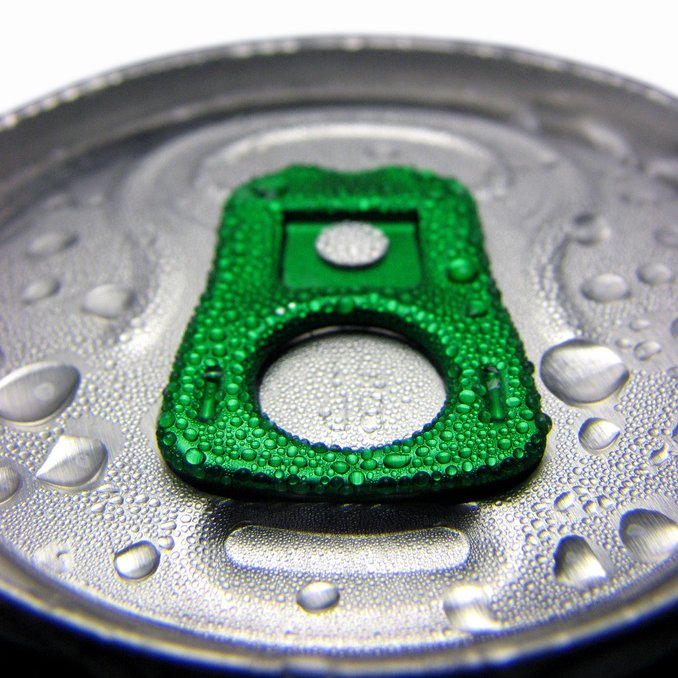
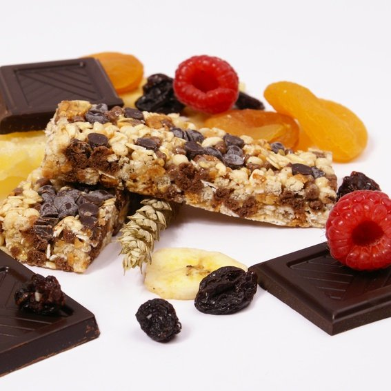

Cola, standard et light
La boisson qui tonifie, qui rafraîchit, Elle est consommée seule ou en accompagnement d´un encas.
Boissons aux fruits gazeuses ou plates
Elles sont l´alliance entre le monde des softs et la présence de fruits ;
Elles satisfont les soifs des adultes et des enfants par leurs côtés frais et légers.
La boisson thé pêche
Une boisson fraîche au thé, parfumée à la pêche, un produit dynamique qui redonne du tonus,
une sensation d´être désaltéré et la saveur de la pêche en plus.
Les jus de fruits
Compositions de jus de fruits à base de concentré ou 100% jus.
Sans sucre ajouté, conformément à la législation.
Pour vous offrir tous les bénéfices d´un jus de fruits.
Plusieurs parfums pour satisfaire toutes les envies : Jus d´orange, Jus de pomme, Tropical.
Eaux plates et gazeuses
Eaux minérales ou eaux de source, vendues en format 50 cl, elles sont indispensables aux consommateurs nomades.

Biscuits
Au chocolat, aux noisettes, ou à la noix de coco,
vous trouverez sûrement un biscuit pour vous faire plaisir et satisfaire une petite envie.
Les grandes marques présentes dans nos distributeur sont régulièrement reformulées pour s´adapter
aux goûts du plus grand nombre de consommateurs.
Barres céreales
Que vous soyez sportif, ou que vous fassiez attention à votre ligne,
nous mettons à votre disposition des barres de céréales énergisantes,
ainsi qu´une gamme allégée et équilibrée.
Confiseries
Nos distributeurs vous proposent toute une gamme de bonbons et chewing-gum qui satisfera les plus gourmands.